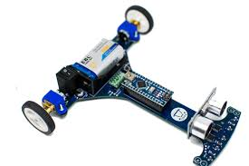
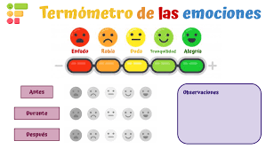

¡Hola! Soy Oscar Gerardo, estudiante de la carrera de Ingeniería en Sistemas Computacionales. Actualmente
me encuentro cursando la carrera en la "Universidad Tres Culturas", donde prácticamente
ya llevo 2 años y medio.
Uno de mis objetivos por los cuales escogí esta carrera es porque quiero tener una mejor vida
haciendo lo que más me gusta, en este caso, la programación. Actualmente tengo 20 años y para cuando
termine la carrera, ya tendré 21 años.
Habilidades Técnicas 📖
Como bien mencioné anteriormente, me gusta la parte de programar, y para eso necesito un lenguaje. He pasado por distintos
lenguajes, como lo serían Java, C++, PHP, etc. Actualmente, el lenguaje principal en el que estoy trabajando, y por el cual
sigo estudiando la carrera, es Python, porque me quiero especializar en el área de análisis de datos. Por lo cual, Python
es mi lenguaje principal por el momento.
Proyectos ⚒️
Algunos de los proyectos que he realizado junto con colaboraciones de otros compañeros míos, fue la creación de
una calculadora de emociones.
Así como también fui partícipe de un proyecto de electrónica, basado en el diseño y la construcción de un
robot seguidor de líneas.
También he estado involucrado en otros proyectos, pero los que muestro acá son los que se han completado.
Los proyectos anteriores se detuvieron o no se acabaron por cuestiones personales.


Mis Pasatiempos ❤️
Aparte de ser un estudiante de Ingeniería en Sistemas Computacionales, le dedico un tiempo a la
parte de edición de videos y a la creación de contenido.
Subo videos con regularidad a mi canal; mi principal tema es el contenido de un juego
llamado "Roblox",
en el cual dedico una gran parte de mi tiempo en un juego llamado "Counter Blox". Me considero un jugador
profesional en ese juego, así como también
soy un inversionista en el mercado de las skins del ya mencionado juego.